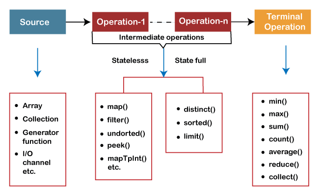

2. Java 8 Streams
1) What Are Streams?
Streams can be defined as a sequences of elements from a source which support data processing operations. You can treat streams as operations on data. You will get to know as you go through this article.
2) Why Streams?
Almost every Java application use Collections API to store and process the data. Despite being the most used Java API, it is not easy to write the code for even some common data processing operations like filtering, finding, matching, sorting, mapping etc using Collections API . So, there needed Next-Gen API to process the data. So Java API designers have come with Java 8 Streams API to write more complex data processing operations with much of ease.
3) Characteristics Of Java 8 Streams
3.1) Streams are not the data structures
Streams doesn't store the data. You can't add or remove elements from streams. Hence, they are not the data structures. They are the just operations on data.
3.2) Stream Consumes a data source
Stream consumes a source, performs operations on it and produces the result. Source may be a collection or an array or an I/O resource. Remember, stream doesn't modify the source.
3.3) Intermediate And Terminal Operations
Most of the stream operations return another new stream and they can be chained together to form a pipeline of operations.
The operations which return stream themselves are called intermediate operations. For example – filter(), distinct(), sorted() etc.
The operations which return other than stream are called terminal operations. count(). min(), max() are some terminal operations.
2. Java 8 Stream Intermediate Vs Terminal Operations
| Intermediate Operations | Terminal Operations |
|---|---|
| They return stream. | They return non-stream values. |
| They can be chained together to form a pipeline of operations. | They can't be chained together. |
| Pipeline of operations may contain any number of intermediate operations. | Pipeline of operations can have maximum one terminal operation, that too at the end. |
| Intermediate operations are lazily loaded. | Terminal operations are eagerly loaded. |
| They don't produce end result. | They produce end result. |
| Examples : filter(), map(), distinct(), sorted(), limit(), skip() |
Examples : forEach(), toArray(), reduce(), collect(), min(), max(), count(), anyMatch(), allMatch(), noneMatch(), findFirst(), findAny() |
3.4) Pipeline Of Operations
A pipeline of operations consists of three things – a source, one or more intermediate operations and a terminal operation. Pipe-lining of operations let you to write database-like queries on a data source. In the below example, int array is the source, filter() and distinct() are intermediate operations and forEach() is a terminal operation.
IntStream.of(new int[] {4, 7, 1, 8, 3, 9, 7}).filter((int i) -> i > 5).distinct().forEach(System.out::println);
3.5 Internal Iteration
Collections need to be iterated explicitly. i.e you have to write the code to iterate over collections. But, all stream operations do the iteration internally behind the scene for you. You need not to worry about iteration at all while writing the code using Java 8 Streams API.
3.6 Parallel Execution
To gain the performance while processing the large amount of data, you have to process it in parallel and use multi core architectures. Java 8 Streams can be processed in parallel without writing any multi threaded code. For example, to process the collections in parallel, you just use parallelStream() method instead of stream() method.
List names = new ArrayList<>();
names.add("David");
names.add("Johnson");
names.add("Samontika");
names.add("Brijesh");
names.add("John");
//Normal Execution
names.stream().filter((String name) -> name.length() > 5).skip(2).forEach(System.out::println);
//Parallel Execution
names.parallelStream().filter((String name) -> name.length() > 5).skip(2).forEach(System.out::println);
3.7 Streams are lazily populated
All elements of a stream are not populated at a time. They are lazily populated as per demand because intermediate operations are not evaluated until terminal operation is invoked.
3.8 Streams are traversable only once
You can't traverse the streams more than once just like iterators. If you traverse the stream first time, it is said to be consumed.
List nameList = Arrays.asList("Dinesh", "Ross", "Kagiso", "Steyn");
Stream stream = nameList.stream();
stream.forEach(System.out::println);
stream.forEach(System.out::println);
//Error : stream has already been operated upon or closed
3.9) Short Circuiting Operations
Short circuiting operations are the operations which don't need the whole stream to be processed to produce a result. For example – findFirst(), findAny(), limit() etc.
4) java.util.stream.Stream
java.util.stream.Stream interface is the center of Java 8 Streams API. This interface contains all the stream operations. Below table shows frequently used Stream methods with description.
| Operation | Method Signature | Type Of Operation | What It Does? |
|---|---|---|---|
| filter() | Stream<T> filter(Predicates<T> predicate) | Intermediate | Returns a stream of elements which satisfy the given predicate. |
| map() | Stream<R> map(Functions T, R-> mapper) | Intermediate | Returns a stream consisting of results after applying given function to elements of the stream. |
| distinct() | Stream<T> distinct() | Intermediate | Returns a stream of unique elements. |
| sorted() | Stream<T> sorted() | Intermediate | Returns a stream consisting of elements sorted according to natural order. |
| limit() | Stream<T> limit(long maxSize) | Intermediate | Returns a stream containing first \( n \) elements. |
| skip() | Stream<T> skip(long n) | Intermediate | Returns a stream after skipping first \( n \) elements. |
| forEach() | void forEach(Consumers<T> action) | Terminal | Performs an action on all elements of a stream. |
| toArray() | Object[] toArray() | Terminal | Returns an array containing elements of a stream. |
| reduce() | T reduced(T identity, BinaryOperator<T> accumulator) | Terminal | Performs reduction operation on elements of a stream using initial value and binary operation. |
| collect() | R collect(Collectors<T> collector) | Terminal | Returns mutable result container such as List or Set. |
| min() | Optional<T> min(Comparator<T> comparator) | Terminal | Returns minimum element in a stream wrapped in an Optional object. |
| max() | Optional<T> max(Comparators<T> comparator) | Terminal | Returns maximum element in a stream wrapped in an Optional object. |
| count() | long count() | Terminal | Returns the number of elements in a stream. |
| anyMatch() | boolean anyMatch(Predicates<T> predicate) | Terminal | Returns true if any one element of a stream matches with given predicate. |
| allMatch() | boolean allMatch(Predicates<T> predicate) | Terminal | Returns true if all the elements of a stream matches with given predicate. |
| noneMatch() | boolean noneMatch(Predicates<T> predicate) | Terminal | Returns true only if all the elements of a stream doesn't match with given predicate. |
| findFirst() | Optional<T> findFirst() | Terminal | Returns first element of a stream wrapped in an Optional object. |
| findAny() | Optional<T> findAny() | Terminal | Randomly returns any one element in a stream. |
5) Java 8 Stream Operations
Let's see some important stream operations with examples.
5.1) Stream Creation Operations
5.1.1) empty() : Creates an empty stream
Method Signature : public static<T> Stream<T> empty()
Type Of Method : Static Method
What It Does? : Returns an empty stream of type T.
Stream emptyStream = Stream.empty();
System.out.println(emptyStream.count());
//Output : 0
5.1.2) of(T t) : Creates a stream of single element of type T
Method Signature : public static<T> Stream<T> of(T t)
Type Of Method : Static Method
What It Does? : Returns a single element stream of type T.
Stream singleElementStream = Stream.of(new Student());
System.out.println(singleElementStream.count());
//Output : 1
5.1.3) of(T... values) : Creates a stream from values
Method Signature : public static<T> Stream<T> of(T... values)
Type Of Method : Static Method
What It does? : Returns a stream consisting of supplied values as elements.
Stream streamOfNumbers = Stream.of(7, 2, 6, 9, 4, 3, 1);
System.out.println(streamOfNumbers.count());
//Output : 7
5.1.4) Creating streams from collections
From Java 8, every collection type will have a method called stream() which returns the stream of respective collection type.
Example : Creating a stream from List
List listOfStrings = new ArrayList<>();
listOfStrings.add("One");
listOfStrings.add("Two");
listOfStrings.add("Three");
listOfStrings.stream().forEach(System.out::println);
// Output :
// One
// Two
// Three
5.2 Selection Operations
5.2.1 filter(): Selecting with a predicate
Method Signature : Stream<T> filter(Predicate<T> predicate)
Type Of Operation : Intermediate Operation
What it does? : Returns a stream of elements which satisfy the given predicate.
List names = new ArrayList<>();
names.add("David");
names.add("Johnson");
names.add("Samontika");
names.add("Brijesh");
names.add("John");
//Selecting names containing more than 5 characters
names.stream().filter((String name) -> name.length() > 5).forEach(System.out::println);
// Output :
// Johnson
// Samontika
// Brijesh
5.2.2 distinct(): Selects only unique elements
Method Signature : Stream<T> distinct()
Type Of Operation : Intermediate Operation
What It Does? : Returns a stream of unique elements.
List names = new ArrayList<>();
names.add("David");
names.add("Johnson");
names.add("Samontika");
names.add("Brijesh");
names.add("John");
names.add("David");
names.add("Brijesh");
//Selecting only unique names
names.stream().distinct().forEach(System.out::println);
// Output :
// David
// Johnson
// Samontika
// Brijesh
// John
5.2.3) limit() : Selects first n elements
Method Signature : Stream<T> limit(long maxSize)
Type Of Operation : Intermediate Operation
What It Does? : Returns a stream containing first n elements.
List names = new ArrayList<>();
names.add("David");
names.add("Johnson");
names.add("Samontika");
names.add("Brijesh");
names.add("John");
names.add("David");
names.add("Brijesh");
// Selecting first 4 names
names.stream().limit(4).forEach(System.out::println);
// Output :
// David
// Johnson
// Samontika
// Brijesh
5.2.4) skip() : Skips first n elements
Method Signature : Stream<T> skip(long n)
Type Of Operation : Intermediate Operation
What It Does? : Returns a stream after skipping first n elements.
List names = new ArrayList<>();
names.add("David");
names.add("Johnson");
names.add("Samontika");
names.add("Brijesh");
names.add("John");
names.add("David");
names.add("Brijesh");
// Skipping first 4 names
names.stream().skip(4).forEach(System.out::println);
// Output :
// John
// David
// Brijesh
5.3) Mapping Operations
5.3.1) map() : Applies a function
Method Signature : Stream<R> map(Function<T, R> mapper);
Type Of Operation : Intermediate Operation
What It Does? : Returns a stream consisting of results after applying given function to elements of the stream.
List names = new ArrayList<>();
names.add("David");
names.add("Johnson");
names.add("Samontika");
names.add("Brijesh");
names.add("John");
//Returns length of each name
names.stream().map(String::length).forEach(System.out::println);
// Output :
// 5
// 7
// 9
// 7
// 4
Other versions of map() method : mapToInt(), mapToLong() and mapToDouble().
5.4) Sorting Operations
5.4.1) sorted() : Sorting according to natural order
Method Signature : Stream<T> sorted()
Type Of Operation : Intermediate Operation
What It Does? : Returns a stream consisting of elements sorted according to natural order.
List names = new ArrayList<>();
names.add("David");
names.add("Johnson");
names.add("Samontika");
names.add("Brijesh");
names.add("John");
//Sorting the names according to natural order
names.stream().sorted().forEach(System.out::println);
// Output :
// Brijesh
// David
// John
// Johnson
// Samontika
5.4.2) sorted(Comparator) : Sorting according to supplied comparator
Method Signature : Stream<T> sorted(Comparator<T> comparator)
Type Of Operation : Intermediate Operation
What It Does? : Returns a stream consisting of elements sorted according to supplied Comparator.
List names = new ArrayList<>();
names.add("David");
names.add("Johnson");
names.add("Samontika");
names.add("Brijesh");
names.add("John");
//Sorting the names according to their length
names.stream().sorted((String name1, String name2) -> name1.length() - name2.length()).forEach(System.out::println);
// Output :
// John
// David
// Johnson
// Brijesh
// Samontika
5.5) Reducing Operations
Reducing operations are the operations which combine all the elements of a stream repeatedly to produce a single value. For example, counting number of elements, calculating average of elements, finding maximum or minimum of elements etc.
5.5.1) reduce(): Produces a single value
Method Signature : T reduce(T identity, BinaryOperator<T> accumulator);
Type Of Operation : Terminal Operation
What It Does? : This method performs reduction operation on elements of a stream using initial value and binary operation.
int sum = Arrays.stream(new int[] {7, 5, 9, 2, 8, 1}.reduce(0, (a, b) -> a+b);
//Output : 32
There is another form of reduce() method which takes no initial value. But returns an Optional object.
OptionalInt sum = Arrays.stream(new int[] {7, 5, 9, 2, 8, 1}).reduce((a, b) -> a+b);
//Output : OptionalInt[32]
Methods min(), max(), count() and collect() are special cases of reduction operation.
5.5.2) min(): Finding the minimum
Method Signature : Optional<T> min(Comparator<T> comparator)
Type Of Operation : Terminal Operation
What It Does? : It returns minimum element in a stream wrapped in an Optional object.
OptionalInt min = Arrays.stream(new int[] {7, 5, 9, 2, 8, 1}).min();
//Output : OptionalInt[1]
//Here, min() of IntStream will be used as we are passing an array of ints
5.5.3) max(): Finding the maximum
Method Signature : Optional<T> max(Comparator<T> comparator)
Type Of Operation : Terminal Operation
What It Does? : It returns maximum element in a stream wrapped in an Optional object.
OptionalInt max = Arrays.stream(new int[] {7, 5, 9, 2, 8, 1}).max();
//Output : OptionalInt[9]
//Here, max() of IntStream will be used as we are passing an array of ints
5.5.4) count(): Counting the elements
Method Signature : long count()
Type Of Operation : Terminal Operation
What It Does? : Returns the number of elements in a stream.
List names = new ArrayList<>();
names.add("David");
names.add("Johnson");
names.add("Samontika");
names.add("Brijesh");
names.add("John");
//Counting the names with length > 5
long noOfBigNames = names.stream().filter((String name) -> name.length() > 5).count();
System.out.println(noOfBigNames);
// Output : 3
5.5.5) collect() : Returns mutable container
Method Signature : R collect(Collector<T> collector)
Type Of Operation : Terminal Operation
What It Does? : collect() method is a special case of reduction operation called mutable reduction operation because it returns mutable result container such as List or Set.
List names = new ArrayList<>();
names.add("David");
names.add("Johnson");
names.add("Samontika");
names.add("Brijesh");
names.add("John");
//Storing first 3 names in a mutable container
List first3Names = names.stream().limit(3).collect(Collectors.toList());
System.out.println(first3Names);
// Output : [David, Johnson, Samontika]
5.6) Finding And Matching Operations
5.6.1) anyMatch() : Any one element matches
Method Signature : boolean anyMatch(Predicate<T> predicate)
Type Of Operation : Short-circuiting Terminal Operation
What It Does? : Returns true if any one element of a stream matches with given predicate. This method may not evaluate all the elements of a stream. Even if the first element matches with given predicate, it ends the operation.
List names = new ArrayList<>();
names.add("David");
names.add("Johnson");
names.add("Samontika");
names.add("Brijesh");
names.add("John");
if(names.stream().anyMatch((String name) -> name.length() == 5))
{
System.out.println("Yes... There is a name exist with 5 letters");
}
5.6.2) allMatch() : All elements matches
Method Signature : boolean allMatch(Predicate<T> predicate)
Type Of Operation : Terminal Operation
What It Does? : This method returns true if all the elements of a stream matches with given predicate. Otherwise returns false.
List names = new ArrayList<>();
names.add("Sampada");
names.add("Johnson");
names.add("Samontika");
names.add("Brijesh");
if(names.stream().allMatch((String name) -> name.length() > 5))
System.out.println("All are big names");
}
5.6.3) noneMatch(): No element matches
Method Signature : boolean noneMatch(Predicate<T> predicate)
Type Of Operation : Terminal Operation
What It Does? : Returns true only if all the elements of a stream doesn't match with given predicate.
List names = new ArrayList<>();
names.add("David");
names.add("Johnson");
names.add("Samontika");
names.add("Brijesh");
names.add("John");
if(names.stream().noneMatch((String name) -> name.length() == 2))
System.out.println("There is no two letter name");
}
5.6.4) findFirst(): Finding first element
Method Signature : Optional<T> findFirst()
Type Of Operation : Short-circuiting Terminal Operation
What It Does? : Returns first element of a stream wrapped in an Optional object.
Optional firstElement = Stream.of("First", "Second", "Third", "Fourth").findFirst();
//Output : Optional[First]
5.6.5) findAny(): Finding any element
Method Signature : Optional<T> findAny()
Type Of Operation : Short-circuiting Terminal operation
What It Does? : Randomly returns any one element in a stream. The result of this operation is unpredictable. It may select any element in a stream. Multiple invocations on the same source may not return same result.
Optional anyElement = Stream.of("First", "Second", "Third", "Fourth").findAny();
5.7) Other Operations
5.7.1) forEach() :
Method Signature : void forEach(Consumer<T> action)
Type Of Operation : Terminal Operation
What It Does? : Performs an action on all elements of a stream.
Stream.of("First", "Second", "Second", "Third",
"Fourth").limit(3).distinct().forEach(System.out::println);
// Output
// First
// Second
5.7.2) toArray() : Stream to array
Method Signature : Object[] toArray()
Type Of Operation : Terminal Operation
What It Does? : Returns an array containing elements of a stream.
List names = new ArrayList<>();
names.add("David");
names.add("Johnson");
names.add("Samontika");
names.add("Brijesh");
names.add("John");
//Storing first 3 names in an array
Object[] streamArray = names.stream().limit(3).toArray();
System.out.println(Arrays.toString(streamArray));
// Output
// [David, Johnson, Samontika]
5.7.3) peek();
Method Signature : Stream<T> peek(Consumer<T> action)
Type Of Operation : Intermediate Operation
What It Does? : Performs an additional action on each element of a stream. This method is only to support debugging where you want to see the elements as you pass in a pipeline.
List names = new ArrayList<>();
names.add("David");
names.add("Johnson");
names.add("Samontika");
names.add("Brijesh");
names.add("John");
names.add("David");
names.stream()
.filter(name -> name.length() > 5)
.peek(e -> System.out.println("Filtered Name :"+e))
.map(String::tolpperCase)
.peek(e -> System.out.println("Mapped Name :"+e))
.toArray();
//Output :
//Filtered Name :Johnson
//Mapped Name :JOHNSON
//Filtered Name :Samontika
//Mapped Name :SAMONTIKA
//Filtered Name :Brijesh
//Mapped Name :BRIJESH